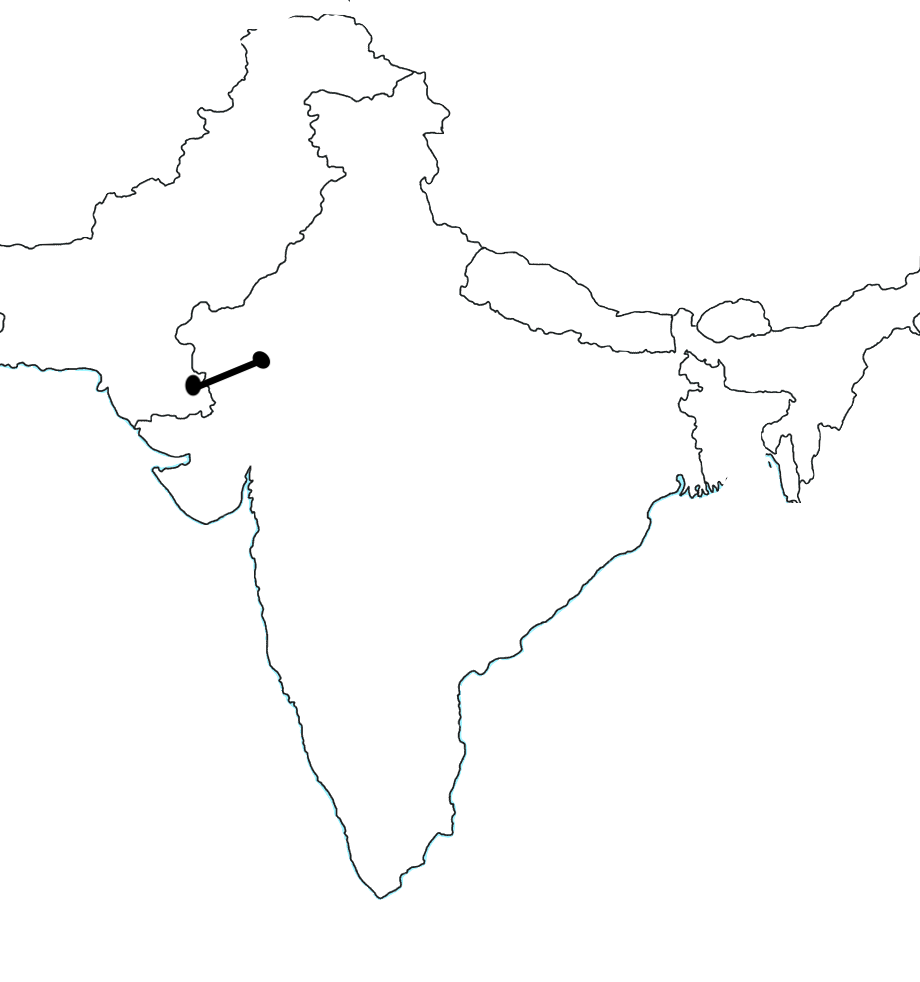

Nisha had a long journey, and she had to take the train to reduce time. Her journey just to get to the train station was tiresome. Her family had to leave their home in Mirpur Khas and went on by foot because the trains were too deadly. They went all the way Nisha’s uncle’s house, and from there, after resting for a few days, were able to get on a different train to get to Jodhpur, India, even which then took a while as well as it being a dangerous because there were people with knives aboard. This event was significant to the story because her journey was demanding and shaped her perspective on the entire situation and proved to her that people were fighting over things that should not have happened if people turned to peace. Pictured is the train ride that Nisha likely took to get to Jodhpur. (Hiranandani)
